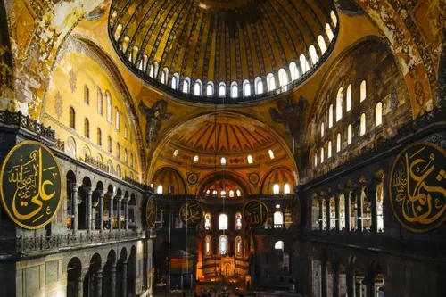

Hagia Sophia, Türkiye
Constructed: 532–537 CE
Hagia Sophia has been a cathedral, a mosque, a museum, and a mosque again, making it one of the only buildings on Earth to have served all three major roles across its 1,500-year history. When it was completed in 537 CE, its massive dome, appearing to float on a ring of windows, was the largest in the world and stayed that way for nearly a thousand years. Byzantine engineers achieved this using an innovative system of arches and pendentives that architects still study today as an early masterpiece of structural design.
Type: Byzantine & Ottoman Architecture